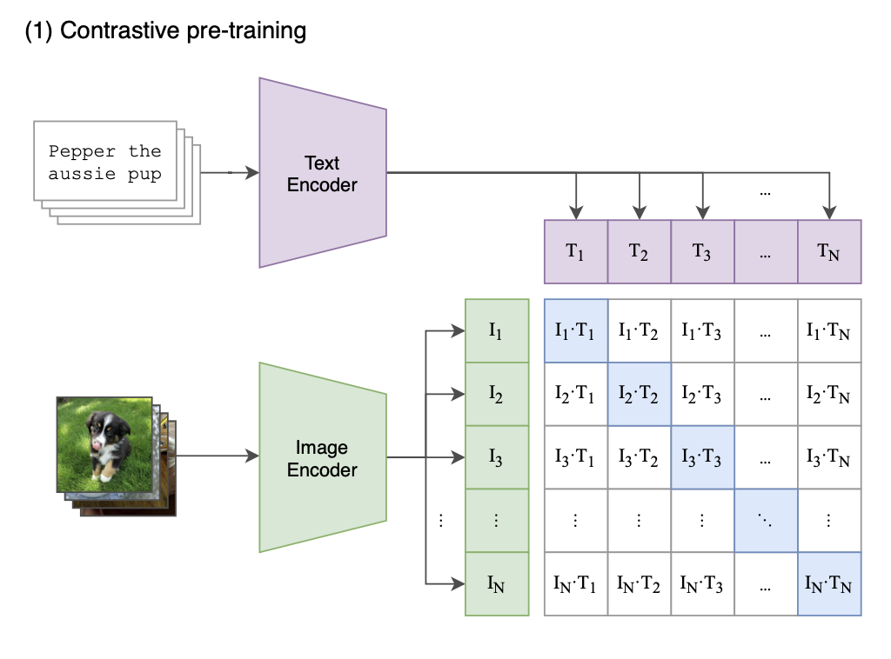

[Paper Note] Learning Transferable Visual Models From Natural Language Supervision
TL;DR
- CLIP maps images and text into the same embedding space.
- It is trained using contrastive learning. Within each batch, the similarity between correct image and text feature pairs is maximized, while the similarity between incorrect pairs is minimized.
- Both the image and text encoders are trained from scratch. The text encoder also has an autoregressive loss.
- The output of the EOS token in the text encoder is used as the feature of the text.
Previous Methods vs. Our Method
Previous methods rely on:
- Predicting a fixed set of predetermined object categories.
- Limited supervision, which restricts the model’s ability to generalize.
- Classification-based approaches, requiring new classifications to specify any other visual concept.
Our method offers a different approach:
- Learning state-of-the-art image representations using only image captions.
- Training on a large dataset of 400M image-text pairs.
- Improved generalization to downstream tasks.
The effectiveness of our method can be validated through various tasks, including:
- OCR
- Action recognition in videos
- Geo-localization
- Fine-grained object classification
Background
-
In NLP, models learn from raw text without being limited to specific tasks, using a general prediction method.
-
Previous methods lacked sufficient scale.
-
Linear-probe representation learning analysis involves training a linear classifier on top of the model and comparing the results to determine which model performs better.
-
The main focus of this type of work is using language as a training signal.
Method
- Existing ImageNet-based models require significant computational resources. Therefore, a fast encoder is needed.
using contrastive learning
- Jointly training an image CNN and a text transformer from scratch to predict the caption of an image was unsuccessful.
- Problem: Attempting to predict the exact words of the text is difficult due to the wide variety of captions.
- Therefore, contrastive learning is used.
Objective
-
Proxy task: Predicting which text as a whole is paired with which image.
-
CLIP learns a multi-modal embedding space.
-
It jointly trains an image encoder and a text encoder, maximizing the cosine similarity of real pairs and minimizing the similarity of incorrect pairs within a batch.
-
We optimize a symmetric cross-entropy loss over these similarity scores.

Training
- training from scratch, not using pretrained text model.
- Only a linear projection is used between the encoder space and the contrastive embedding space.
- Adding more layers to the projection does not change the performance. Non-linear projections are typically used in self-supervised learning that uses only images.
- A random square crop from resized images is the only data augmentation used during training.
- The CLIP model treats the temperature parameter τ in the softmax function as a learnable parameter and parameterizes it in logarithmic form (i.e., optimizes log(τ)), avoiding manual hyperparameter tuning.
Text encoder
- For text embedding, the text sequence is bracketed with [SOS] and [EOS] tokens. The activations of the highest layer of the transformer at the [EOS] token are treated as the feature representation of the text, which is layer normalized and then linearly projected into the multi-modal embedding space.
- The text encoder also optimizes an autoregressive loss.
hyperparameters
- Training parameters: 32 epochs, Adam optimizer, Cosine learning rate schedule.
- batch size = 32768
- 336 pixel square images
Experiments
- ViT performs better than ResNet.
- can do zero-shot on unseen datasets.
- Adding more words to the prompt can increase classification accuracy. For example, “a photo of {label}, a type of pet”.
- Linear probe is used to evaluate the quality of the learned representations.
- Zero-shot CLIP is much more robust to distribution shift than standard ImageNet models.